Graphic Design Work
I've always loved art. Whether that be drawing, painting, sketching, sculpting, anything you can mention, I'm there. I recently found the wonderful world of graphic design, and I fell in love. In the gallery below, you can find some of the work I've done with iconography and subject drawing. I recently finished a graphic design specialization with Coursera in which we did a study of binder clips that led to the creation of album covers with that subject. Similarly, I've done some work with shapes and icons, also pictured below. I've also showcased a series of stylized spines I've designed as a series on backbone.
Gallery
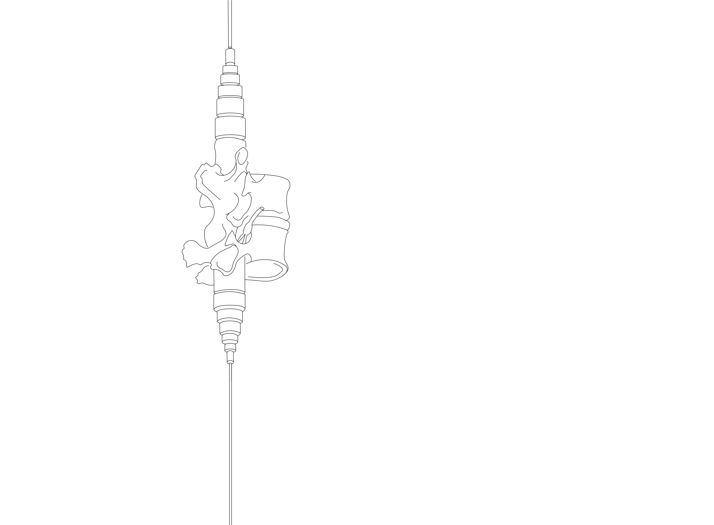
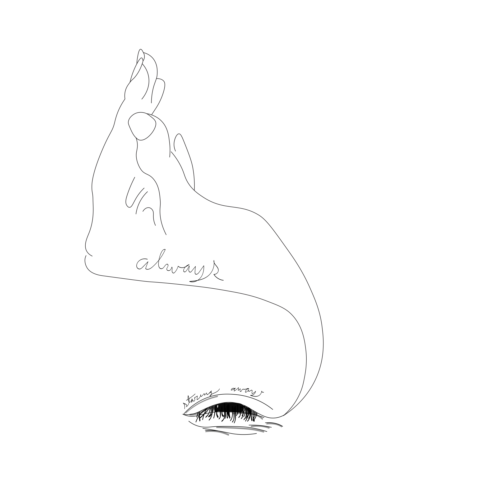
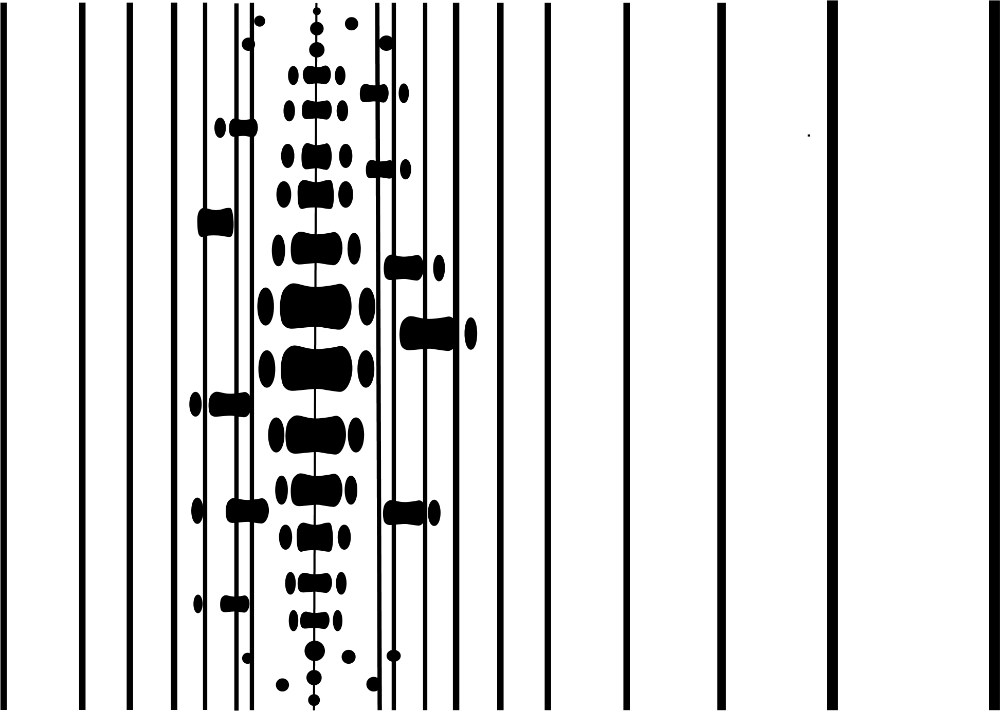
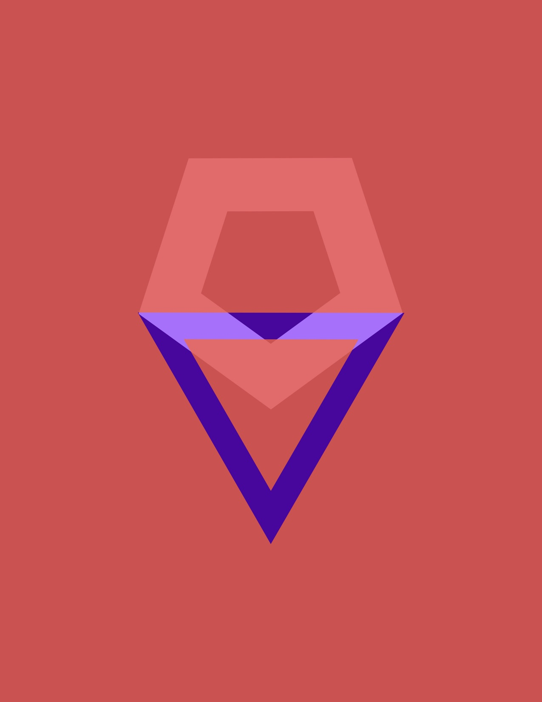
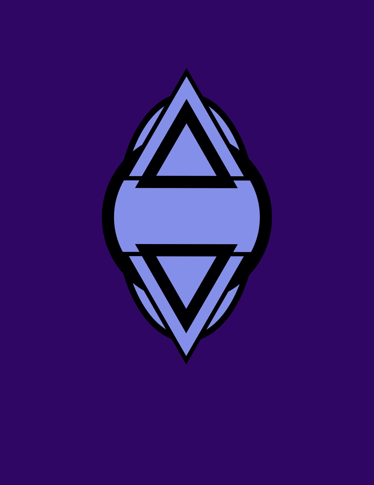
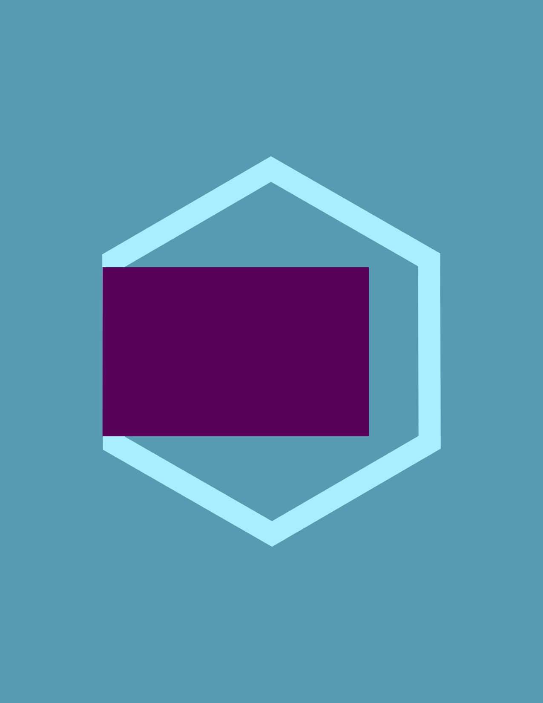
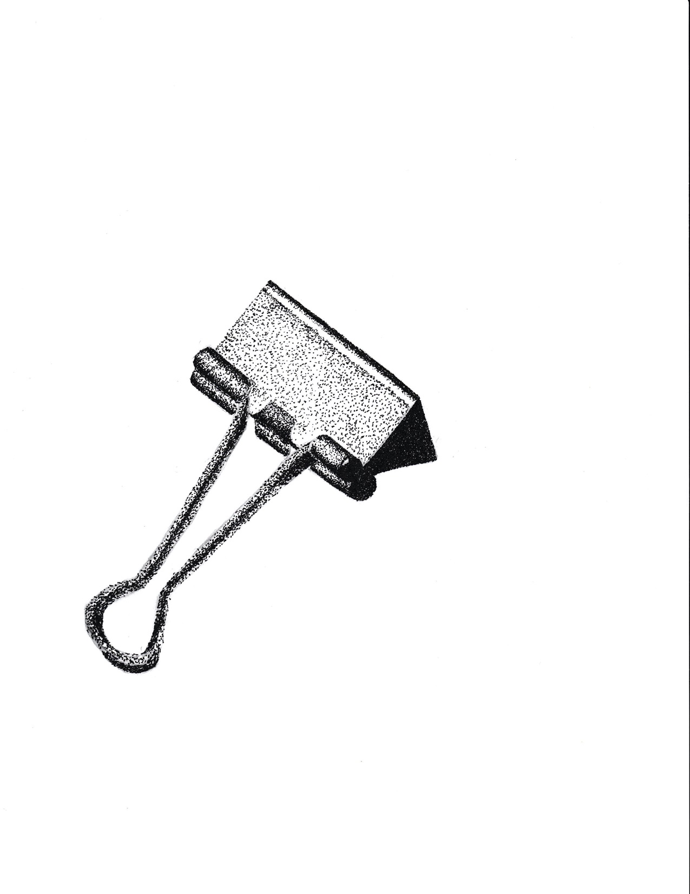
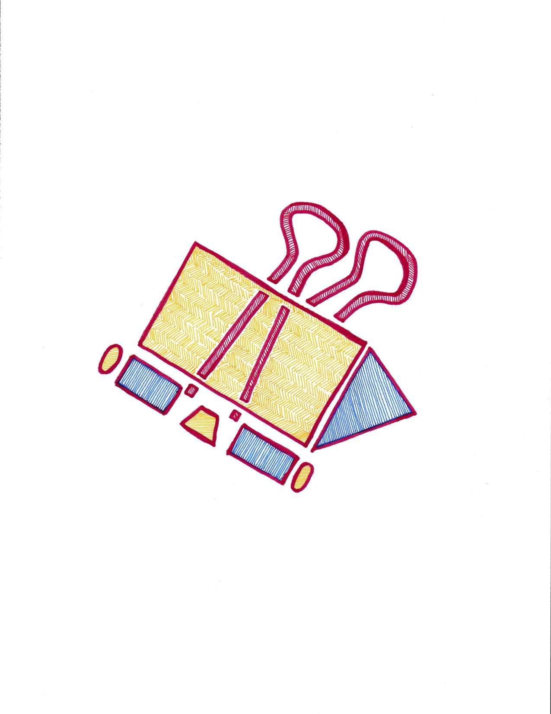
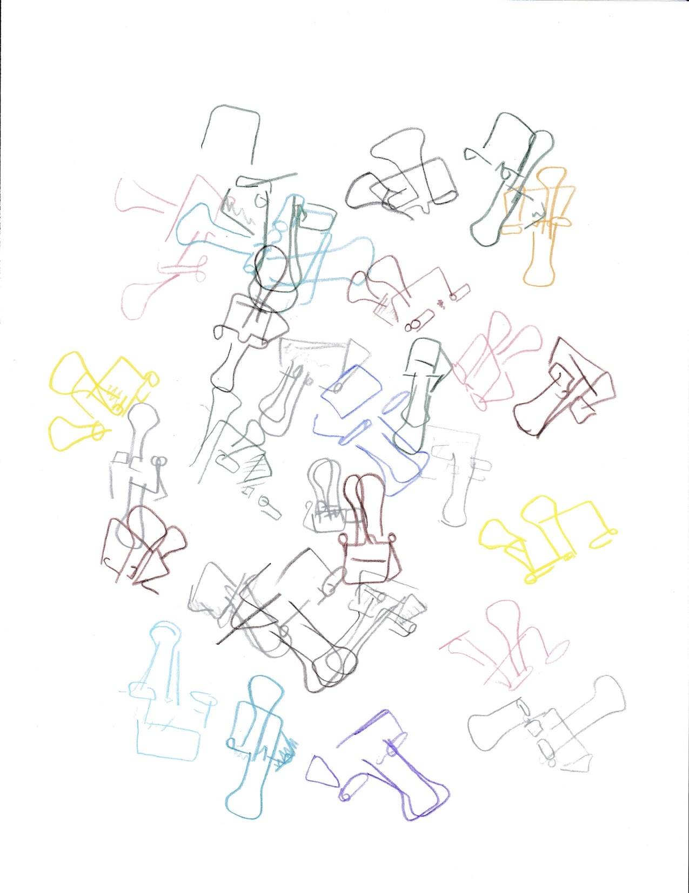
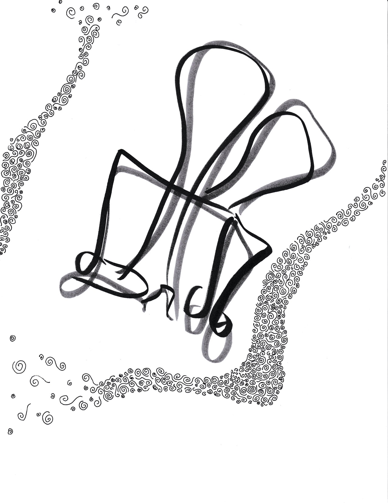
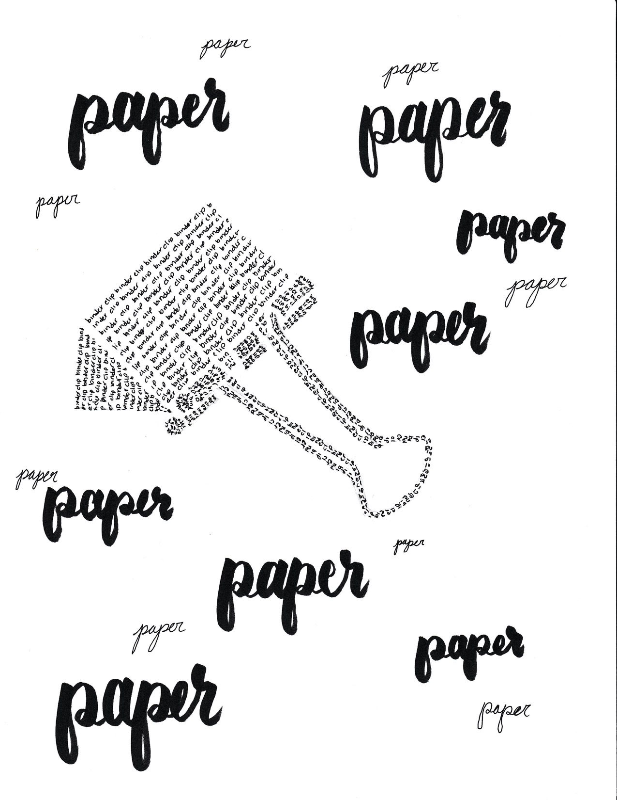